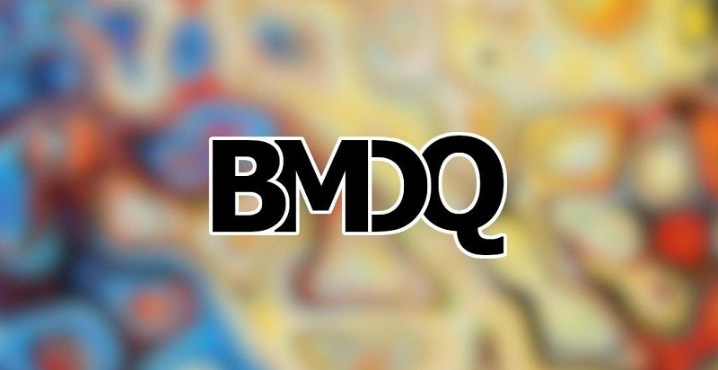

A Paz - BMDQ
Esse cover produzido no ano de 2021 contou com a participação de mais de 33 artistas da cidade de Brazópolis e região.
A BMDQ, Banda Músicos De Quarentena, surgiu no ano de 2020, como um refúgio para amigos que sentiam a necessiadade de um espaço artístico comum.
O cover da versão brasileira do sucesso de Michael Jackson teve um bom alcançe nas redes sociais. Confira aqui.
Fique por dentro dos trabalhos da BMDQ, acesse: youtube.com/bmdq
← Voltar ao portfolio